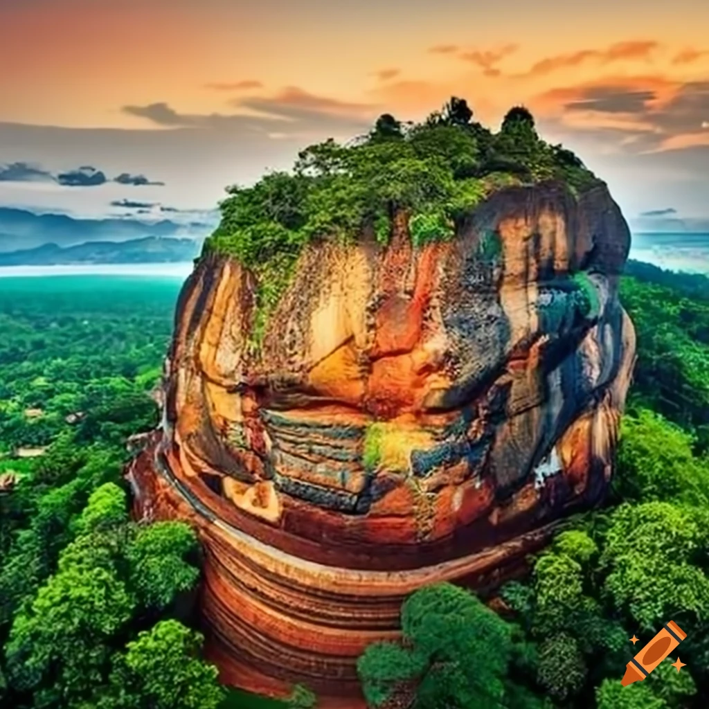
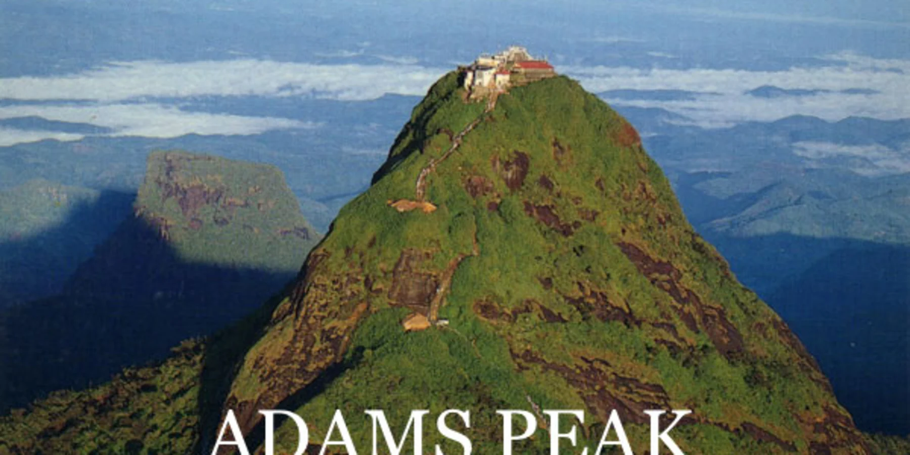
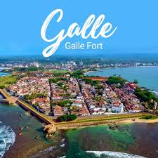

Temple of the Tooth, Kandy
The Temple of the Tooth is one of the most sacred Buddhist temples in the world, located in Kandy. It houses the relic of the tooth of the Buddha.

Sigiriya
Sigiriya, an ancient rock fortress, is a UNESCO World Heritage Site and one of Sri Lanka’s most iconic landmarks.

Adam's Peak
Adam's Peak is a sacred mountain in Sri Lanka, revered by Buddhists, Hindus, Muslims, and Christians for the sacred footprint found at its summit.

Galle Fort
Galle Fort is a historical, fortified city built by the Portuguese in the 16th century, later expanded by the Dutch, now a UNESCO World Heritage site.

Dambulla Cave Temple
The Dambulla Cave Temple, also known as the Golden Temple of Dambulla, is the largest and best-preserved cave temple complex in Sri Lanka.